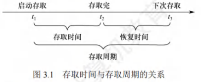
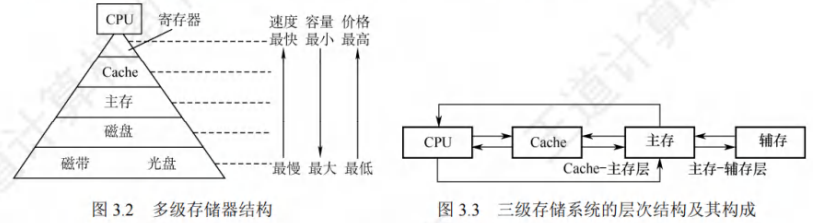

存储器概述
[toc]
存储器的分类
按在计算机中的作用(层次)分类
- 主存储器：简称主存，也称内存储器(内存)，用来存放计算机运行期间所需的程序和数据，CPU可以直接随机地对其进行访问，也可和高速缓冲存储器(Cache)及辅助存储器交换数据。其特点是容量较小、存取速度较快、每位价格较高。
- 辅助存储器：简称辅存，也称外存储器或外存，用于存放当前暂时不用的程序和数据，以及一些需要永久性保存的信息。辅存内容需调入主存后才能被CPU访问。其特点是容量大、存取速度较慢、单位成本低。
- 高速缓冲存储器：简称Cache，位于主存和CPU之间，存放当前CPU经常使用的指令和数据，以便CPU高速访问。Cache的存取速度可与CPU速度相匹配，但存储容量小、价格高。现代计算机常将其制作在CPU中。
按存储介质分类
- 磁表面存储器(磁盘、磁带)
- 硬磁芯存储器
- 半导体存储器(MOS型存储器、双极型存储器)
- 光存储器(光盘)
按存取方式分类
-
随机存储器(RAM)：
- 存储器的任何一个存储单元都能随机存取，且存取时间与存储单元物理位置无关。
- 优点是读/写方便、使用灵活，主要用作主存或高速缓冲存储器。
- RAM又分为静态RAM和动态RAM。
-
只读存储器(ROM)：
- 存储器内容只能随机读出不能写入。
- 信息写入后固定不变，断电也不丢失，常用来存放固定程序、常数和汉字字库等。
- 它与随机存储器可共同作为主存一部分，统一构成主存地址域。
- 由ROM派生出的存储器有可反复重写类型，广义上的只读存储器虽已可电擦除写入，但写入速度比读取速度慢得多，仍保留断电内容保留、随机读取特性。
-
串行访问存储器：
-
对存储单元读/写操作时，需按物理位置先后顺序寻址，包括顺序存取存储器(如磁带)和直接存取存储器(如磁盘、光盘)。
-
顺序存取存储器内容只能按某种顺序存取，存取时间与信息在存储体上的物理位置有关，特点是存取速度慢。
-
直接存取存储器既不像RAM那样随机访问任何存储单元，也不像顺序存取存储器那样完全按顺序存取，而是介于两者之间。
-
存取信息时通常先找整个存储器中的某个小区域(如磁盘上的磁道)，再在小区域内顺序查找。
-
按信息的可保存性分类
-
易失性存储器：断电后，存储信息即消失的存储器，如RAM。
-
非易失性存储器：断电后，信息仍然保持的存储器，如ROM、磁表面存储器和光存储器。
-
破坏性读出：若某个存储单元所存储的信息被读出时，原存储信息被破坏
-
非破坏性读出：若读出时，被读单元原存储信息不被破坏。
-
具有破坏性读出性能的存储器，每次读出操作后，必须紧接一个再生操作，以恢复被破坏的信息。
存储器的性能指标
存储器有三个主要性能指标，即存储容量、单位成本和存储速度。
- 存储容量：存储容量 = 存储字数×字长(如1M×8位)。单位换算：1B(Byte，字节) = 8b(bit，位)。存储字数表示存储器的地址空间大小，字长表示一次存取操作的数据量。
- 单位成本：每位价格 = 总成本/总容量。
- 存储速度：数据传输速率(每秒传送信息的位数) = 数据的宽度/存取周期。
- 存取时间(T)：存取时间是指从启动一次存储器操作到完成该操作所经历的时间，分为读出时间和写入时间。
- 存取周期™：存取周期是指存储器进行一次完整的读/写操作所需的全部时间，即连续两次独立访问存储器操作(读或写操作)之间所需的最小时间间隔。
- 主存带宽(Bm)：也称数据传输速率，表示每秒从主存进出信息的最大数量，单位为字/秒、字节/秒(B/s)或位/秒(b/s)。
- 存取时间不等于存取周期，通常存取周期大于存取时间。
- 这是因为对任何一种存储器，在读写操作之后，总要有一段恢复内部状态的复原时间。
- 对于破坏性读出的存储器，存取周期往往比存取时间大得多，甚至可达Tm = 2T，因为存储器中的信息读出后需要马上进行再生。

多级层次的存储系统

为解决存储系统大容量、高速度和低成本这三个相互制约的矛盾，在计算机系统中，通常采用多级存储器结构。
- 在图中由上至下，位价越来越低，速度越来越慢，容量越来越大，CPU访问的频度也越来越低。
- 实际上，存储系统层次结构主要体现在Cache-主存层和主存-辅存层。
- 在存储体系中，Cache、主存能与CPU直接交换信息，辅存则要通过主存与CPU交换信息。
- 主存与CPU、Cache、辅存都能交换信息。
存储器层次结构的主要思想是上一层的存储器作为低一层存储器的高速缓存。
-
当CPU要从存储器中存取数据时，先访问Cache，若不在Cache中，则访问主存，若不在主存中，则访问磁盘，此时，操作数从磁盘读出送到主存，然后从主存送到Cache。
-
从CPU的角度看，Cache-主存层的速度接近于Cache，容量和位价却接近于主存。
-
从主存-辅存层分析，其速度接近于主存，容量和位价却接近于辅存。这就解决了速度、容量、成本这三者之间的矛盾。
-
Cache-主存层：主要解决CPU和主存速度不匹配的问题，主存和Cache之间的数据调动是由硬件自动完成的，对所有程序员均是透明的。
-
主存-辅存层：主要解决存储系统的容量问题，主存和辅存之间的数据调动是由硬件和操作系统共同完成的，对应用程序员是透明的。
在主存-辅存层的不断发展中，逐渐形成了虚拟存储系统，在这个系统中程序员编程的地址范围与虚拟存储器的地址空间相对应，编程时可用的地址空间远大于主存空间。
注意：在Cache-主存层和主存-辅存层中，上一层中的内容都只是下一层中的内容的副本，也即Cache(或主存)中的内容只是主存(或辅存)中的内容的一部分。